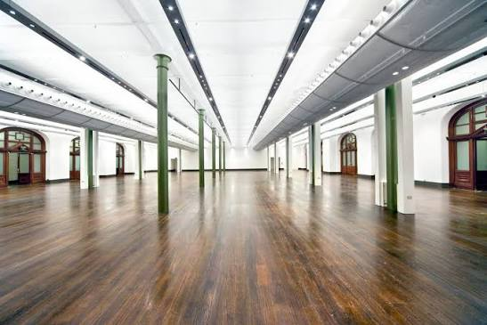
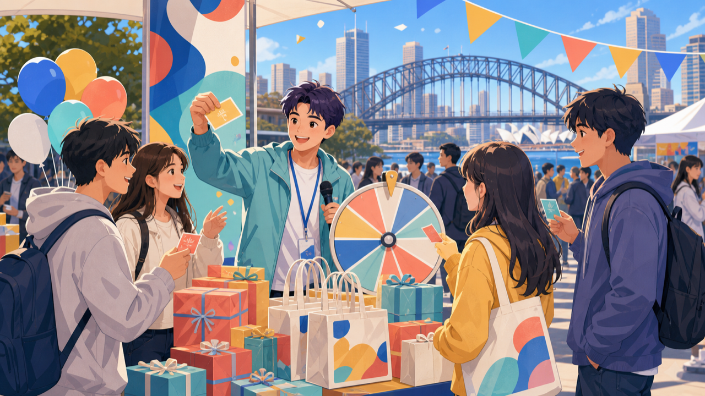
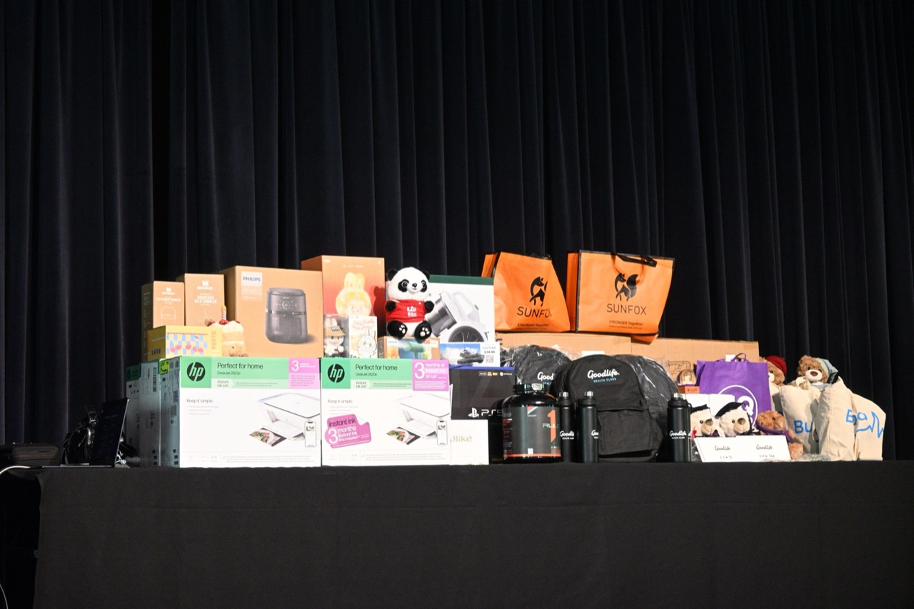
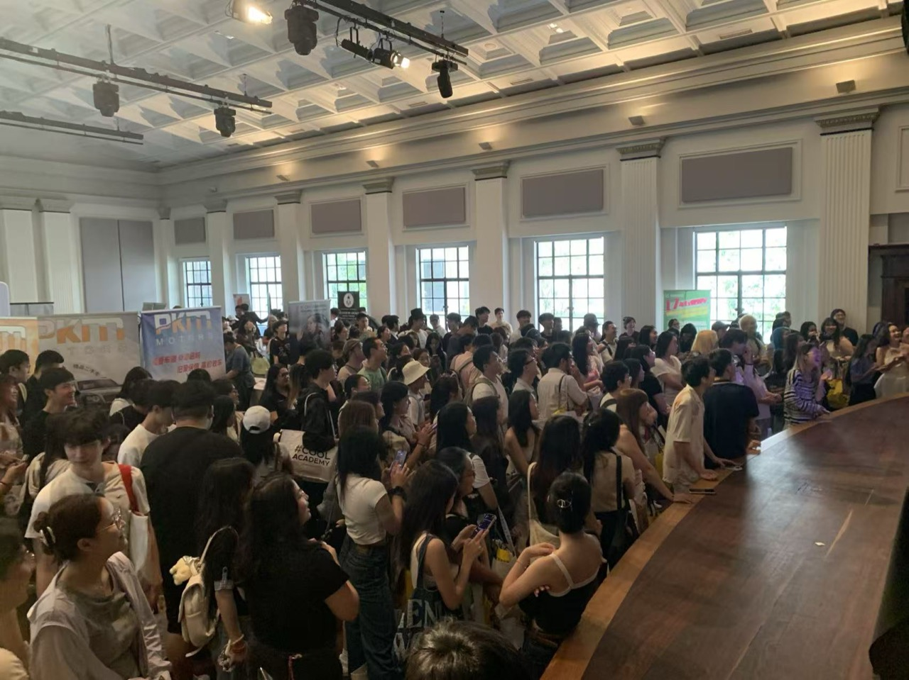
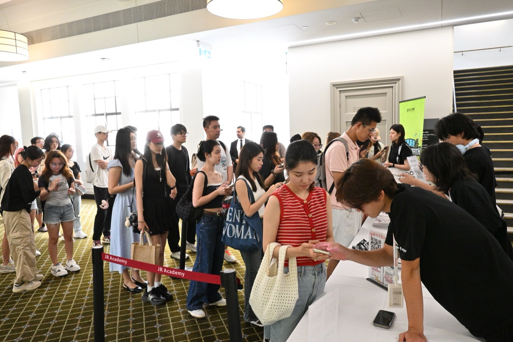
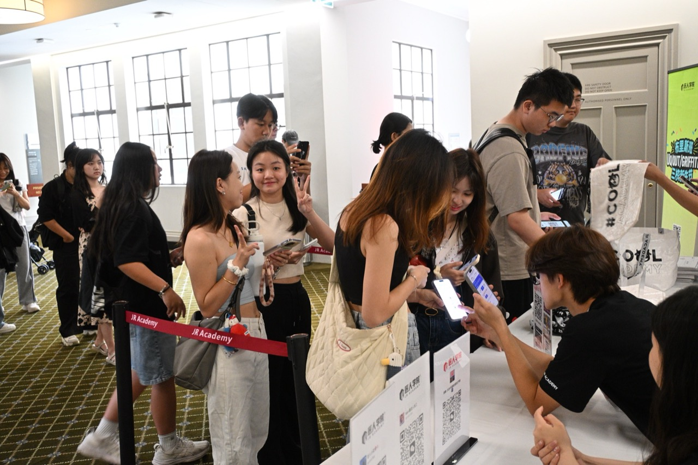
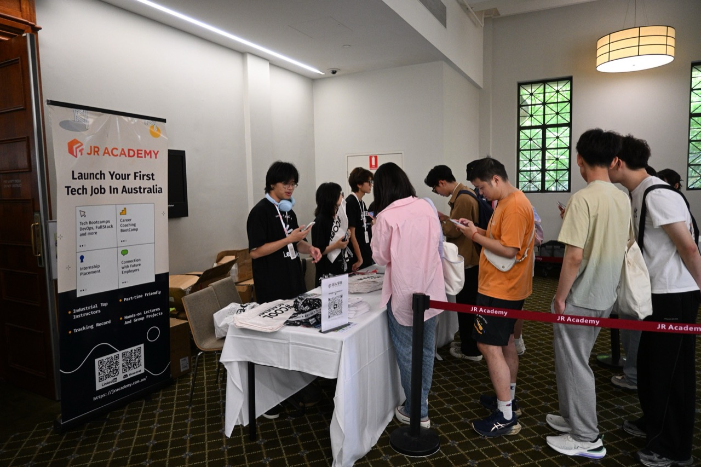
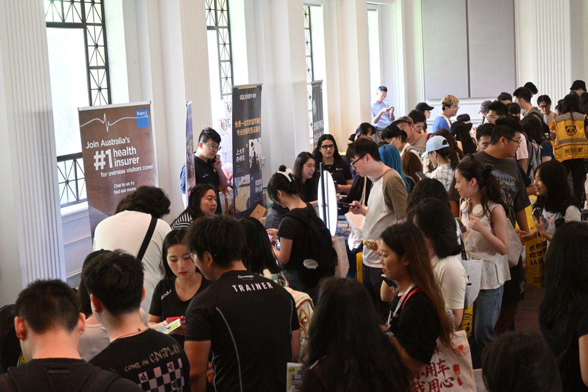

Sydney Orientation
Festival · Partner Invitation
26 September · Sydney Town Hall · a partnership proposal for brands joining us on the day

A landmark CBD venue — the best place to make a first impression at the start of semester, and we would like to make it with you.
The Sydney Orientation Festival is built around four-university first-years, a landmark CBD venue and on-site conversion. It is both a welcome event for students and a brand’s live debut in front of them.
first-years expected
major Sydney universities
Booths + gift bags + activities
Real, immediate needs
Students who have just landed in Sydney need food, transport, phone plans, housing, banking and everyday services straight away.
The right moment
Reach them around the start of semester and your brand has a real shot at becoming their default choice.
Conversion on the floor
Scanning, gifting, questions, group sign-ups and follow-up all happen in one place, one after another.
Measurable for sponsors
You get reach, captured leads and a post-event readout, so the spend can actually be assessed.
The event serves first-years from USYD, UNSW, UTS and Macquarie, covering the mainstream Chinese-speaking international student community in Sydney — a fit for brands that need awareness built early in the semester.
A broad comprehensive university; strong uptake for everyday services, banking, telco and food.
Concentrated in STEM and business; suits careers, education and technology partners.
Right in the CBD, so attendance and on-the-day participation run high.
Brings in the northern suburbs cohort, so the event reaches beyond the inner city.
Venue: Sydney Town Hall
Date: 26 September
Character: professional, formal, easy to reach, built for brand display
A city landmark
It reads as a real venue rather than a campus trestle table — right for a formal launch and for shooting content.
Easy to get to
Town Hall station and the George St retail core sit at the door, so turning up costs students nothing.
Indoors, weather-proof
No weather risk, so booths, gift displays and activities all hold up.
A more professional setting
The room itself lifts the brand — suited to finance, education, lifestyle and service partners.

Address
Sydney Town Hall
483 George St, Sydney NSW 2000
Date & time
Saturday 26 September 2026
2:00 PM – 5:00 PM
Getting there
About one minute’s walk from Town Hall station, on the George St retail strip, with bus and light rail access.
The space
Lower Town Hall — formal, with clear circulation, and room for large booths and stage programming.

Free gift bag
The gift bag is the most direct reason to walk in, and it makes the trip feel worth it on arrival.
Activity tasks
Stamp cards, prize-draw entries and booth tasks turn a walk-past into a full lap of the room.
Practical information
Living in Sydney, studying, job hunting and city resources are all folded into the day, which raises what the event is worth to them.
Meeting people
First-years come for the social side, and that naturally stretches how long they stay and how much they share.
First-mover mindshare
Students are new to the city, so brands are easier to remember and easier to try for the first time.
Leads captured face to face
Booth conversations, QR group sign-ups, vouchers and gift pickups turn a glance into something you can follow up.
Content that keeps working
Photos, short video, student UGC and our own recap content carry the day into the following weeks online.
WeChat / RED / group chats / direct notifications
Booth contact / QR scans / gift bags / tasks
Group follow-up / voucher redemption / CRM
Food & lifestyle
Restaurants, bubble tea, delivery, retail and local services — straight into what students buy most often.
Finance & telco
Banking, payments, insurance, SIM cards and internet plans are the first things students sort out on arrival.
Education & careers
Courses, language, migration advice and internship or job services sit naturally alongside study and career planning.
Housing & transport
Apartments, rental platforms, furniture, used cars and transport cover the settling-in essentials.
If you want reach
Brands racing to build awareness and claim the default-choice position early should take a mid or upper tier for stronger presence.
If you want leads
Brands chasing followable WeChat, group or sign-up leads can pair a QR task with group follow-up to lift conversion.
The Course Rep network · student communities
Years of running Australian campus content and live events, which shows in how we organise turnout, drive attendance and execute on the day.
Hundun Academy · founder and high-net-worth community
Their audience of business owners includes many of the parents behind these students — the people who actually make the family spending decisions.
What matters on the day is not putting brands on display — it is giving students a reason to work through the room stand by stand. Prize-draw entries and task mechanics thread footfall, interaction and scanning together.
Check in
Collect a base prize-draw entry and the floor map.
Work the booths
Complete brand tasks to earn more entries.
Share it
Moments, RED posts and group photos spread the reach.
Draw and capture
The most engaged students become leads you can return to.
Check-in entry
One entry on arrival — checking in puts them straight into the draw.
Team bonus
Two entries each for a team of three, three each for a team of five, which pushes students to sign up together.
Stamp card
One entry per sponsor booth scanned, up to eight booths by default.
Social task
Screenshots from RED, Moments or Instagram are reviewed, and approved posts earn entries.
Why this works for sponsors
Every interaction pays out in the same currency — draw entries. To collect more, students form teams, walk the floor, scan and post, which hands sponsors even footfall and followable leads.
A post-event readout
We report on registrations, check-ins, scans, social tasks, winners and sponsor leads, so the spend is more than a booth in a room.
For a first outing — baseline presence and on-the-day interaction.
Our recommended tier, balancing reach, on-site resources and pre-event support.
For partners who want priority placement and a stronger presence.
A Sydney-only premium tier for brands after customisation and category exclusivity.
Exclusive event sponsorship — maximum reach, presence throughout, and the only partner in your category.
Common to all tiers
All five are built around a booth at the festival, with increasing levels of pre-event promotion, on-site resources and post-event reporting.
What we would suggest
Gold suits most partners who want both on-the-day contact and content that carries afterwards; Premium is for brands pushing hard on awareness or wanting something close to exclusivity.
| Entitlement | Silver | Gold | Diamond | Premium | Title |
|---|---|---|---|---|---|
| Booth | Standard | Priority zone | High-traffic zone | Custom build | Prime booth |
| Pre-event promotion | Basic mention | Featured | Multiple posts | Co-created campaign | Top-tier campaign |
| Online content | Basic | Dedicated feature | Multi-channel push | Fully customised | Presence throughout |
| MC mentions / acknowledgement | Yes | Extended | Featured mentions | Co-presented | Exclusive mentions · opening address |
| Activity integration | Standard task | Priority placement | Deep integration | Custom mechanic | Dedicated segment |
| Category exclusivity | No | Negotiable | Priority | Configurable | Sole partner |
| Post-event reporting | Basic readout | Detailed | In-depth | Dedicated summary | Dedicated readout + custom report |
| Sydney Orientation Festival | Single-campus O-Week | Street promo / flyering | |
|---|---|---|---|
| Universities reached | Four, in one place | One | Whoever walks past |
| Audience | 1,500+ targeted first-years | Around 500 | Unpredictable, untargeted |
| Entry cost | From $1,110 | Around $3,220 / day | Labour billed separately |
| Delivery | Fully run by us | Bring your own team | Build your own team |
| Setting | An indoor landmark venue | A campus stall | Street corner or campus gate |
| Lead capture | QR scans, group sign-ups, data readout | Limited | Weak |
Choose a tier
We talk through your goals, settle the tier and entitlements, and confirm booth and on-site requirements.
Assets & promotion
You send logo, collateral and gifts; we schedule the pre-event content.
On the day
Booth setup, MC mentions, QR tasks and prize-draw activity, with our team directing the floor throughout.
Reporting
After the event you get attendance, scan, lead and interaction data so the spend can be assessed.
Lock it in early
Good positions and naming entitlements are limited, and confirming earlier means a better spot and a longer run-up.
Open to customisation
Naming, a dedicated activity segment, custom gifts and content partnerships can all be combined to suit.
A look back atprevious events
Real figures and feedback from past events, showing why this format is worth the spend.

“It was a well-run event. Students actually stopped to talk — nothing like handing out flyers.”
Feedback from a previous partner“The gifts and task mechanics genuinely pulled people into the booth, and following up in the group afterwards was easier.”
Feedback from a previous partnerThe figures above are aggregated across previous JR Academy Orientation Festival events, and are provided to illustrate the model rather than to describe any single event.
Dense interaction
Around 90% of attendees joined in the booth activities; spin wheels, stamp cards and the draw pulled people in and kept them there longer.
One-to-one advice
Senior students and migration advisers answered questions on courses, study, careers and visas, with volunteers covering check-in, wayfinding and logistics.

Professional without being stiff
Busy without being chaotic
That balance is the point: partners need to believe the event is worth backing, and students need to want to be there.






The Course Repmedia network
Beyond the day itself, the Course Rep network across eight universities in four cities carries your presence online through the start of semester.
The Course Rep network runs accounts at USYD, UNSW, UTS, Melbourne, Monash, RMIT, UQ and Adelaide, publishing regularly on student life, education news and local events — a natural way into this audience.
Four cities · eight leading universities
WeChat followers
Engaged community members
Each university has its own account, updating on student life, education news and local events, so your brand can sit inside that stream rather than interrupt it.
Course Rep network · REDLaunched in 2017, the Course Rep network is JR Academy’s longest-running campus content asset.
| Metric | Course Rep RED network |
|---|---|
| Accounts | 8 |
| Followers | 50,000+ |
| Total likes | 500,000+ |
| Total saves | 22,000+ |
| Active groups | 1,500+ |
| Account | Followers |
|---|---|
| UQ Course Rep (University of Queensland) | 14,000+ |
| Melbourne Course Rep (University of Melbourne) | 8,200+ |
| USYD Course Rep (University of Sydney) | 6,200+ |
| UNSW Course Rep (UNSW) | 6,000+ |
| Adelaide Course Rep (University of Adelaide) | 3,200+ |
| Monash Course Rep (Monash University) | 2,900+ |
More than one-off exposure
Group sign-ups on the day, content that stays up and follow-up messaging turn one afternoon of attention into an audience you can reach repeatedly.
A lead pool you can work
Sign-up threads, event notices, offers and surveys keep the brand in contact with students after the day.
What we havedelivered before
Nine years of campus events, official Orientation Week partnerships and custom brand activations are what let us make commitments and keep them.
Official Orientation Week partnerships
Each February and July we work with universities directly during O-Week: banners and posters, on-campus flyering, vouchers and gifts, QR sign-ups and new-student group setup.
A single campus can see over 10,000 people in a day.
Working with student clubs
O-Week is the best window for building early goodwill. Partnering with clubs lets a brand reach the right students through activities they already care about, using the networks already inside the campus.
What brand partnerships include
Gift and voucher distribution · sponsor video · interactive Q&A · speaking slots · WeChat adds · sign-ups or app downloads on your platform.
What we can customise
Themed activations · venue dressing · collateral and gift design · naming · booths · banners · flyers, combined to suit.
events over nine years
average attendance per event
Backed by the Course Rep content network, nine years of live events and our student communities, this Sydney event concentrates reach on four-university first-years at the start of semester. Partnership goes beyond online reach: booth activity, MC mentions, group follow-up and post-event data turn attention in the room into leads you can work.
Be seen in
the first week that counts
Suited to food, telco, banking, education, housing, lifestyle and careers brands that need awareness and leads at the start of semester.